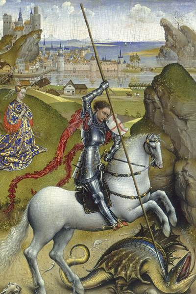

LA LEYENDA DE SANT JORDI Y LA TRADICIÓN DE LAS ROSAS

Según la leyenda de Sant Jordi, la villa de Montblanc estaba siendo aterrorizada por un colosal Dragón. La bestia se había instalado a las afueras del pueblo, infectando el aire y el agua con su aliento apestoso y causando estragos entre el ganado. En su búsqueda de alimento, cada vez se aproximaba más a las murallas, por lo que los vecinos tuvieron que buscar una forma de mantenerlo apartado.
Empezaron dándole de comer ovejas; cuando éstas se acabaron, siguieron con los bueyes, y luego con los caballos. Y por fin no tuvieron más remedio que sacrificar a los propios habitantes...
Se metieron los nombres de todos en un puchero, también el del Rey, y el de su hija la Princesa, y cada día una mano inocente decidía quien moriría la mañana siguiente.
Y una tarde la escogida para ser entregada al Dragón fue la princesa que se llamaba Cleodolinda. Cuenta la leyenda que el Rey lloró y suplicó a sus súbditos por la vida de su hija, pero que de nada le sirvió, ya que no era el único padre desconsolado. Cuentan otros que el Rey entregó a su hija al Dragón con valentía y entereza. Sea como fuere, la joven salió de las murallas y se dirigió hacia su triste destino.
Cuando el terrible Dragón avanzaba hacia la princesa y ya todo parecía perdido, surgió entre la bruma un apuesto Caballero de reluciente armadura, sobre un caballo blanco que arremetió contra la bestia. El animal, herido, se sometió al caballero, que le ató al cuello un extremo del cinturón de la princesa.
La dama tomó el otro extremo del cinturón y, para pasmo de los pobladores de Montblanc, condujo al Dragón como a un perrito hasta la puerta de la ciudad. Allí, a la vista de todos, el caballero remató a la bestia de un certero golpe de lanza.
Jordi, que es como se llamaba el caballero, obsequió a la Princesa con una de esas rosas.
Semejante gesta hizo que el santo caballero alcanzase fama y popularidad durante la Edad media, y que fuera escogido patrón de la caballería y la nobleza.
La leyenda de Sant Jordi dice que los hombres han de regalar una rosa a las mujeres y éstas, un libro a aquellos. Si bien ya no siempre se cumplen esos roles, lo cierto es que todos los 23 de abril, en toda Catalunya se festeja el día de los libros y las rosas.